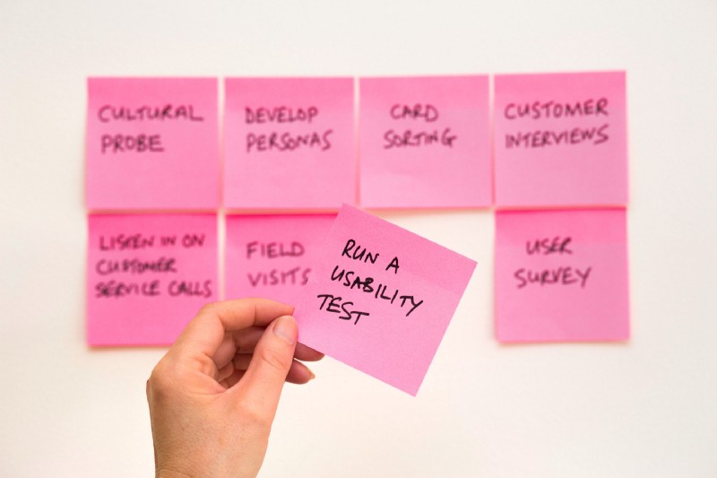

Reviewing your PDP can be a somewhat overwhelming process. So many areas of improvement can be highlighted, it can be a real challenge to discover what to focus on. Not only that but you also want to make sure your areas of focus have high impact benefits to the squad, so much to think about!
These 5 steps should help give you the direction needed to turn those PDP opportunities into something actionable, demonstrable and focused on what you care about.
Depending on your PDP, a lot of areas of improvements might be highlighted(or maybe that's just me). They might be categorised as different things, for example competency or skills. It can be overwhelming to try to parse all of that opportunity into something actionable. The first thing I would suggest is to find the themes. Try your best to group your areas of opportunity as best you can, it won't be perfect, but it's helpful to put together some order. That way, you can tackle the theme to demonstrate the competency and show your skills!
An example that might help, say there's your Agile skills improvement and also a competency you could demonstrate around execution. Could they live under the theme of delivery? Theming can be challenging, but it's an iterative process that you'll improve on over time.
Whenever I've tried to think about what I care about I often struggle. Historically I get wrapped up in the objectives of the team and leave my own preferences to one side, this has gone on for so long in my career, I often struggle to answer the question "What do I even care about?".
One thing working at Gousto has taught me early on was to ask yourself "What gives you energy?". It's deceptively clever for such a simple statement. Focus less on what you want to care about in the future. Focus on what gives you energy now, what undertakings have given you that energy in the past? Use that to inform your decisions.
With that frame of mind pick one or two of your themes that you think will give you energy.
Now that you've come up with the themes you want to put energy into, now is a good time to try to link it to outcomes. What are the outcomes that will help you and the business?
More importantly, can you demonstrate that you personally are improving in this area and that the business is benefiting from it? Come up with as many outcomes as you can here, we'll whittle them down in the next step!
So you have some themes and a greater number of outcomes you could progress, what outcomes should you focus on?
One tactic you can take is to ask yourself is why? Ideally, you ask yourself why about 5 times. The Five whys technique is not perfect, but it will hopefully help challenge you into clarifying why that outcome matters.
The other approach is to look at is metrics. Do your outcomes move any metrics? If not maybe it's worth initially capturing a metric before executing the outcome. When it comes time to review your PDP, demonstrating metrics have moved as a result of executing your PDP is a pretty compelling sign of progress.
At this point the best thing to do is to start breaking down those outcomes and to come up with a plan with your line manager. Hopefully what you now bring to the table is not only what you're going to focus on but also a very clear why you want to focus on it.
Ideally you'll now have the structure in place to really kickstart your PDPs and have much more productive sessions with your line manager. This can also be something you refer back to regularly, particularly in review sessions.
As time passes you might discover other worthwhile initiatives, now you can evaluate those initiatives with the same process and stack it against your current focus. It's always useful to remind yourself not only of what you want to focus on, but what you decided not to do and why. This should be your north star.